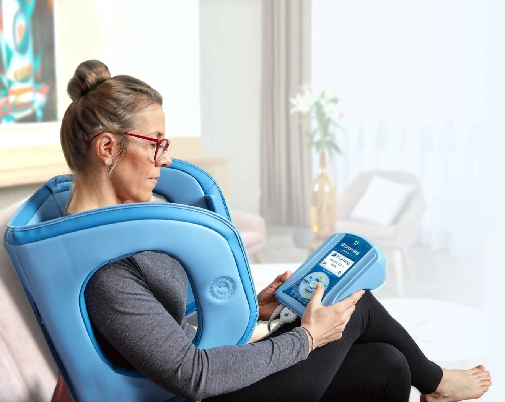

טיפול Biomag בשדה מגנטי פולסי (PEMF) הוא בחירה מצוינת לכל מי שרוצה לדאוג לבריאותו בנוחות הבית. עדין, ללא כאב, ללא זריקות וללא תרופות – מתאים לשימוש יומיומי, על הספה בסלון.
לתיאום הדגמה ללא התחייבות למכשירים
 טכנולוגיה תלת־ממדיתליעילות מרבית
טכנולוגיה תלת־ממדיתליעילות מרבית יותר מ־100,000לקוחות מרוצים
יותר מ־100,000לקוחות מרוצים 30 שנות ניסיוןבכל העולם
30 שנות ניסיוןבכל העולם תקן MDR ואישור משרד הבריאותמכשור רפואי מאושר
תקן MDR ואישור משרד הבריאותמכשור רפואי מאושרפותח ומיוצר בצ'כיה, ומגיע עם מגוון מוליכים – כרית, טבעת וחגורה – לכל אזור בגוף.


השפעות הטיפול מחולקות ל־6 השפעות טיפוליות בסיסיות, שיכולות להשפיע לטובה על התסמינים של מגוון בעיות בריאות ולסייע בטיפול בהן.


Biomag פועל בשיטת שדה אלקטרומגנטי פולסי (PEMF): פעימות מגנטיות עדינות שעוברות דרך הבגדים אל הגוף. לא מרגישים כאב, חום או דקירה.
טכנולוגיה תלת־ממדית בפטנט – פעולה ממוקדת מכמה זוויות וביצועים גבוהים יותר בכל חלק של המוליך.
הפעימות מעודדות את פעילות התאים, תומכות בזרימת הדם ובאספקת חמצן וחומרי הזנה לאזור המטופל, וכך מסייעות לגוף להתאושש בקצב טבעי.

מכשיר אחד בבית – לכל בני המשפחה, בכל שעה שנוחה לכם.

Biomag מתאים במיוחד למצבים הבאים:
מערכות Biomag משמשות גם מטפלים ומרכזים רפואיים. רוצים לנסות לפני שמחליטים? נשמח לתאם הדגמה אישית – בבית, בקליניקה או במרכז הטיפולי.
לתיאום הדגמה
לא. הפעימות המגנטיות עדינות ועוברות דרך הבגדים, ללא כאב, ללא חום וללא דקירה.
כן. המכשיר מאושר על ידי משרד הבריאות ועומד בתקן האירופי למכשור רפואי (MDR).
מערכת אחת משרתת את כל בני הבית. בכל מקרה של ספק, מומלץ להתייעץ עם רופא.
במחיר של טיפול אחד בחודש, בפריסה ל־24 תשלומים.
תאמו הדגמה אישית ללא התחייבות. היועץ האישי שלכם, אביתר, ישמח לענות על כל שאלה – בסבלנות.
התקשרו עכשיו: ________